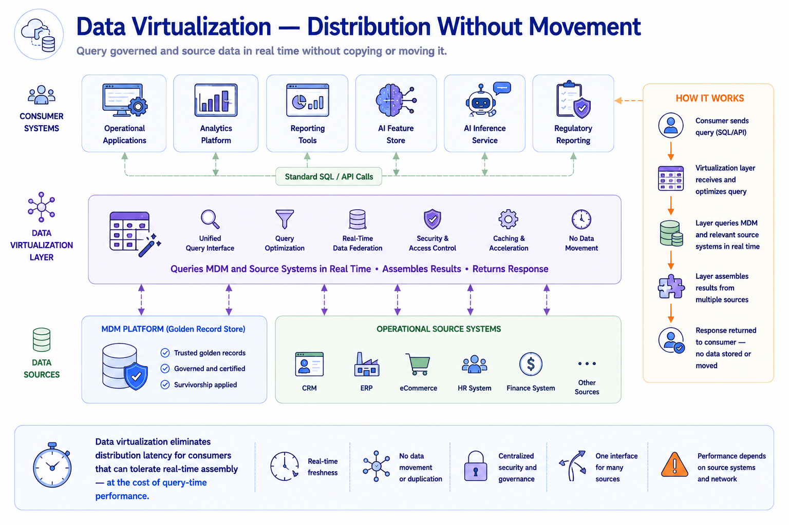
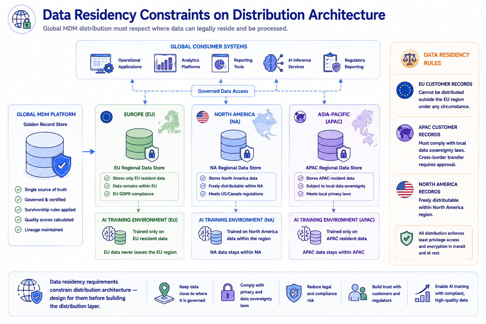
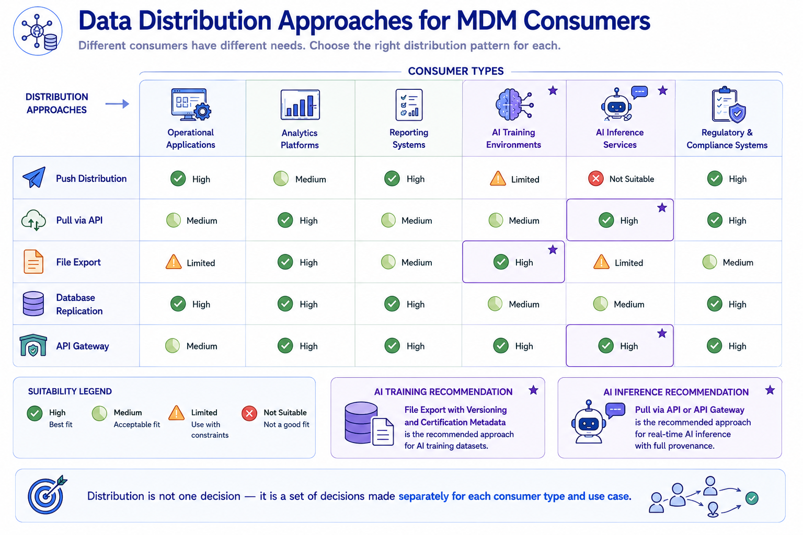

Data Distribution Approaches
Module support notes
Data Virtualization as a Distribution Alternative
Data virtualization is a distribution alternative that deserves consideration alongside physical distribution approaches. Rather than physically moving or copying governed data to consumer locations, virtualization creates a logical access layer that assembles governed entity data from the MDM platform and other sources at query time.
For AI programs with complex cross-entity data requirements — models that need customer, product, and transaction data assembled into a single training record — virtualization can significantly simplify the distribution architecture by eliminating the need to maintain synchronized copies of data across multiple stores. The tradeoff is query-time performance: assembling data at query time is slower than reading from a pre-materialized copy, which makes virtualization better suited to AI training workloads than to real-time inference where response time is critical.
Note
Data virtualization eliminates distribution latency for consumers that can tolerate real-time assembly — at the cost of query-time performance. This makes it well-suited for AI training pipelines that run overnight or on a scheduled cadence, where assembly time is acceptable. It is not appropriate for real-time AI inference use cases where a model needs a governed entity record returned in milliseconds.

Distribution and Data Residency Requirements
Data residency and data sovereignty requirements increasingly constrain MDM distribution architecture, particularly for global organizations with AI programs that span multiple jurisdictions. Customer records governed by GDPR in Europe may not be transferable to AI training environments in other regions without specific legal basis. Financial records subject to local sovereignty requirements may need to remain within national borders.
Distribution architecture that ignores these constraints produces both compliance exposure and AI program delays when regulators or legal teams require distribution patterns to be redesigned after implementation. Building residency constraints into the distribution architecture design from the start — including their implications for AI training dataset scope and geographic access controls — is significantly less costly than retrofitting them.
Warning
Data residency requirements constrain distribution architecture — design for them before building the distribution layer. An AI training pipeline that was built assuming global data access may need to be redesigned from scratch when legal or compliance teams identify residency violations. That redesign is far more expensive than including residency constraints in the initial distribution architecture review.

Distribution is not one decision — it is a set of decisions made separately for each consumer type and use case, with AI training and AI inference typically requiring different approaches.
